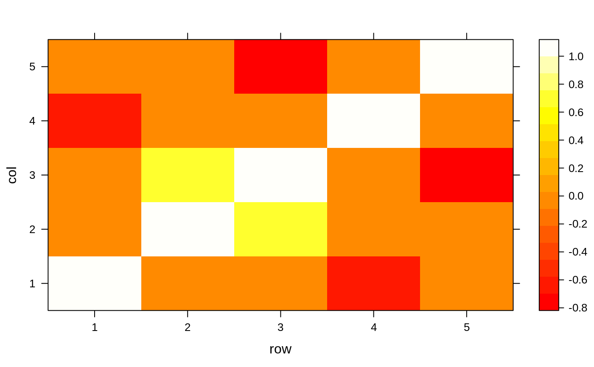

This function searches through a correlation matrix and returns a vector of integers corresponding to columns to remove to reduce pair-wise correlations.
findCorrelation(x, cutoff = 0.9, verbose = FALSE, names = FALSE, exact = ncol(x) < 100)
| x | A correlation matrix |
|---|---|
| cutoff | A numeric value for the pair-wise absolute correlation cutoff |
| verbose | A boolean for printing the details |
| names | a logical; should the column names be returned ( |
| exact | a logical; should the average correlations be recomputed at each step? See Details below. |
A vector of indices denoting the columns to remove (when names
= TRUE) otherwise a vector of column names. If no correlations meet the
criteria, integer(0) is returned.
The absolute values of pair-wise correlations are considered. If two variables have a high correlation, the function looks at the mean absolute correlation of each variable and removes the variable with the largest mean absolute correlation.
Using exact = TRUE will cause the function to re-evaluate the average
correlations at each step while exact = FALSE uses all the
correlations regardless of whether they have been eliminated or not. The
exact calculations will remove a smaller number of predictors but can be
much slower when the problem dimensions are "big".
There are several function in the subselect package
(leaps,
genetic,
anneal) that can also be used to accomplish
the same goal but tend to retain more predictors.
leaps,
genetic,
anneal, findLinearCombos
R1 <- structure(c(1, 0.86, 0.56, 0.32, 0.85, 0.86, 1, 0.01, 0.74, 0.32, 0.56, 0.01, 1, 0.65, 0.91, 0.32, 0.74, 0.65, 1, 0.36, 0.85, 0.32, 0.91, 0.36, 1), .Dim = c(5L, 5L)) colnames(R1) <- rownames(R1) <- paste0("x", 1:ncol(R1)) R1#> x1 x2 x3 x4 x5 #> x1 1.00 0.86 0.56 0.32 0.85 #> x2 0.86 1.00 0.01 0.74 0.32 #> x3 0.56 0.01 1.00 0.65 0.91 #> x4 0.32 0.74 0.65 1.00 0.36 #> x5 0.85 0.32 0.91 0.36 1.00findCorrelation(R1, cutoff = .6, exact = FALSE)#> [1] 4 5 1 3findCorrelation(R1, cutoff = .6, exact = TRUE)#> [1] 1 5 4findCorrelation(R1, cutoff = .6, exact = TRUE, names = FALSE)#> [1] 1 5 4R2 <- diag(rep(1, 5)) R2[2, 3] <- R2[3, 2] <- .7 R2[5, 3] <- R2[3, 5] <- -.7 R2[4, 1] <- R2[1, 4] <- -.67 corrDF <- expand.grid(row = 1:5, col = 1:5) corrDF$correlation <- as.vector(R2) levelplot(correlation ~ row + col, corrDF)findCorrelation(R2, cutoff = .65, verbose = TRUE)#> Compare row 3 and column 2 with corr 0.7 #> Means: 0.35 vs 0.215 so flagging column 3 #> Compare row 1 and column 4 with corr 0.67 #> Means: 0.223 vs 0.074 so flagging column 1#> [1] 3 1findCorrelation(R2, cutoff = .99, verbose = TRUE)#> All correlations <= 0.99#> integer(0)